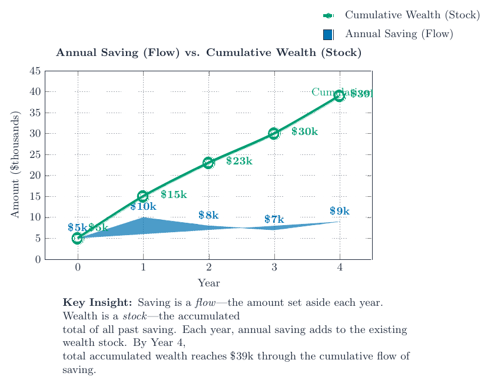
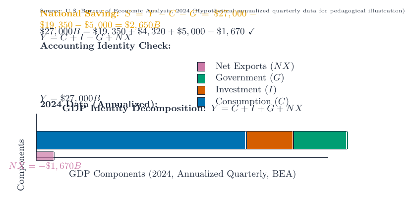
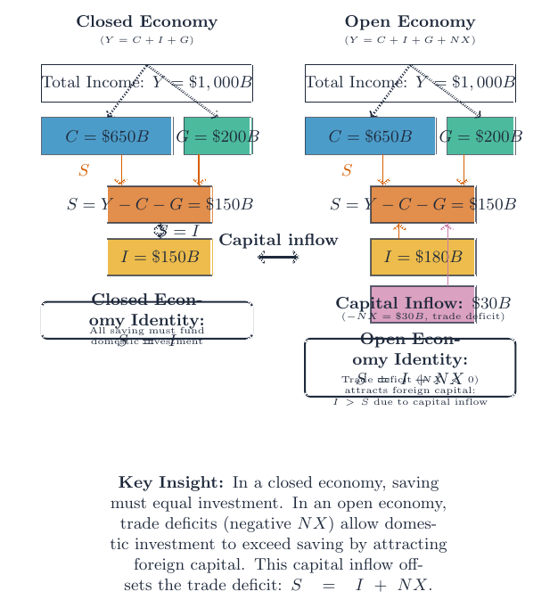
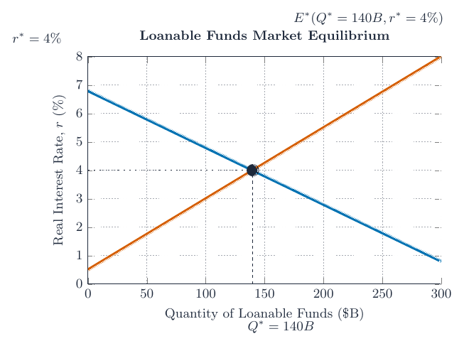
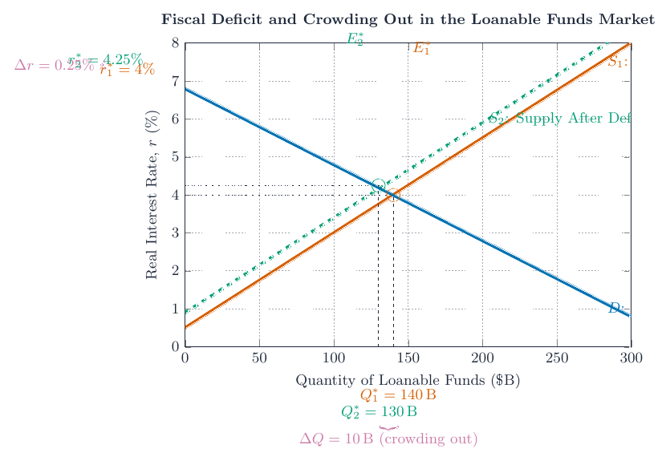

6 Chapter 6: Saving, Investment Spending, and the Financial System
This chapter provides a rigorous, pedagogical treatment of Chapter 6: Saving, Investment Spending, and the Financial System, benchmarked to standard principles curriculum.
6.1 Learning Outcomes and Key Terms
Students should distinguish saving from wealth, apply the national saving identity, and use the loanable-funds model to explain how saving and investment plans respond to real interest rates. These objectives support MA-2 and MA-3 and prepare students for C2002-2. Key terms include private saving, public saving, national saving, investment, loanable funds, real interest rate, deficit, and capital inflow.
6.2 Saving Is a Flow; Wealth Is a Stock
Conceptual Introduction
When you receive a paycheck and decide to put some of it in a savings account, you are saving. Saving is the flow of income not spent over a period (a week, month, or year). By contrast, wealth is the stock of assets you hold at a specific point in time. This distinction matters because confusing flows and stocks is a common source of error in macroeconomic accounting. A household that saves $500 this month adds to its wealth, but the saving itself is a flow: it accumulates wealth over time. Likewise, in macroeconomics, investment refers to spending on newly produced capital goods (buildings, equipment, software) and inventory additions during a period. It does not refer to buying an existing house (which is an asset transfer, not new capital creation) or purchasing a stock certificate (which transfers ownership of an existing firm).
Real-World Application: The U.S. Personal Savings Rate
During the 2008 financial crisis, U.S. household saving jumped from 2% of disposable income to above 6%, as consumers faced falling home values and stock portfolios and rebuilt their wealth buffers. By 2024, after a decade of recovery, the U.S. personal savings rate had settled around 4%—above the pre-crisis average. This variation in the saving flow shows how households respond to wealth shocks (stock market crashes, housing busts) and income uncertainty by altering their current consumption behavior. Understanding whether households are building or depleting wealth (the stock) requires tracking saving flows quarter by quarter.
Mathematical Foundation: Defining Saving and Wealth
If disposable income in a given period is \(Y_d\) and consumption spending is \(C\), then saving \(S\) is:
\[ S = Y_d - C. \]
Over time, cumulative saving adds to the household’s total wealth \(W\). If a household had wealth \(W_0\) at the start of the year and saves \(S\) during the year, then:
\[ W_{\text{end of year}} = W_0 + S. \]
Example: If a household starts with $100,000 in savings, earns $60,000 in disposable income, and spends $55,000, then:
- Saving during the year: \(S = 60,000 - 55,000 = 5,000\) dollars.
- Ending wealth: \(W = 100,000 + 5,000 = 105,000\) dollars.
Figure 1: Saving Flows vs. Wealth Stocks

This timeline visualization contrasts the flow of annual saving (bars, in CourseOrange) with the accumulating wealth stock (line, in CourseBlue). The chart demonstrates how consistent positive saving flows compound into growing wealth over time, illustrating the fundamental distinction between flows (period-based) and stocks (point-in-time).
6.3 National Saving and the Open-Economy Identity
Conceptual Introduction
Just as individuals have saving and wealth, so too do nations. National saving is the total saving of all households, businesses, and government combined. It is a critical variable for understanding how a country finances its investment in new capital and whether it must borrow from abroad. When national saving exceeds domestic investment, a nation is a net lender to the rest of the world—its residents are exporting capital. When investment exceeds saving, the nation must borrow from abroad to finance its investment, creating a current-account deficit. This balance between saving and investment determines whether a country’s foreign debt is growing or shrinking.
The Expenditure Identity and National Saving
Start with the expenditure identity \(Y=C+I+G+NX\). Rearranging gives \(Y-C-G=I+NX\). National saving is \(S=Y-C-G\), so in the simplified model \(S=I+NX\). If net exports are used as the current-account proxy, then \(S-I=NX\): saving above domestic investment corresponds to net lending abroad, while investment above saving is matched by net borrowing from abroad. In full balance-of-payments accounts, the current account includes net primary income and transfers as well as goods and services.
With taxes \(T\) and disposable income \(Y-T\), private saving is \(S_p=Y-T-C\) and public saving is \(S_g=T-G\). National saving adds the two:
\[ S=S_p+S_g=(Y-T-C)+(T-G)=Y-C-G, \qquad S-I=NX \quad\text{(simplified model)}. \]
In a closed economy, \(NX=0\) and planned national saving equals investment in the accounting identity. The identity does not guarantee that desired saving and planned investment are equal at every interest rate; prices, output, and financial markets adjust toward consistency.
Worked Example: Calculating National Saving and Net Exports
Suppose a closed economy has \(Y = 1{,}000\) billion dollars, \(C = 650\) billion, and \(G = 200\) billion. What is national saving? \[\begin{align*} S &= Y - C - G \\ &= 1{,}000 - 650 - 200 \\ &= 150 \text{ billion dollars}. \end{align*}\] In a closed economy, all of this saving must equal domestic investment: \(I = 150\) billion.
Now suppose this is an open economy with the same national income and spending, but investment is higher: \(I = 180\) billion. The identity \(S = I + NX\) implies: \[\begin{align*} 150 &= 180 + NX \\ NX &= 150 - 180 = -30 \text{ billion}. \end{align*}\] The nation has a trade deficit of $30 billion—it must borrow from abroad to finance the gap between its investment and its saving.
Figure 2: GDP Identity Stacked Bar

This stacked bar chart illustrates how national output is composed of consumption (C), investment (I), government spending (G), and net exports (NX). The visualization clarifies that saving \(S = Y - C - G\) represents the portion of output not consumed or spent by government—the resources available for investment and foreign lending.
Figure 3: Closed vs. Open Economy Accounting

Side-by-side comparison of: - Closed economy: \(S = I\) (all national saving funds domestic investment) - Open economy: \(S = I + NX\) (saving funds both domestic investment and net foreign investment)
Clear It Up: The Identity Is Not Causation
The accounting relation \(S = I + NX\) must hold by definition. But it does not tell us whether saving caused investment, investment drove income and hence saving, or whether foreign capital inflows led to the current-account deficit. Use a behavioral model (like the loanable-funds market) and empirical evidence to reason about causation.
6.4 Loanable Funds: Graph and Mechanism
Conceptual Introduction
How do saving and investment plans interact to determine the real interest rate? The loanable-funds market is a simple but powerful model for answering this question. In this market, savers supply funds (they lend), and borrowers (firms investing, households buying homes) demand funds (they borrow). The real interest rate—the inflation-adjusted return on lending—is the price that equilibrates the quantity of funds supplied with the quantity demanded. When the real interest rate is too low, the quantity of loanable funds demanded exceeds the quantity supplied, putting upward pressure on the rate. When the rate is too high, quantity supplied exceeds quantity demanded, pushing the rate down. At equilibrium, quantity supplied equals quantity demanded, and the market clears.
Visual Representation: The Loanable-Funds Equilibrium
Put the quantity of loanable funds on the horizontal axis and the real interest rate on the vertical axis. Planned saving is drawn as a supply of funds, often rising with the real return. Planned investment is a demand for funds, often falling as borrowing becomes more expensive. Their intersection is the model’s equilibrium real rate and quantity. A shift in saving or investment plans moves one curve; a change in the interest rate is a movement along a curve. This is a market model, not a literal inventory of all bank deposits.
Figure 4: Loanable Funds Equilibrium

The supply curve (CourseOrange, upward sloping) represents planned saving as a function of the real interest rate: \(r = 0.5 + 0.025Q\). The demand curve (CourseBlue, downward sloping) represents planned investment: \(r = 6.8 - 0.02Q\). The intersection occurs at equilibrium quantity \(Q^* = 140\) billion dollars and equilibrium rate \(r^* = 4\%\). Dashed guides show the equilibrium coordinates on both axes.
Real-World Application: The 2024 U.S. Loanable-Funds Market
In 2024, the Federal Reserve’s target federal funds rate sat near 5%, keeping the real interest rate (after subtracting expected inflation) in the range of 2%–3%. At these rates, U.S. mortgage rates hovered around 6%–7%, constraining housing demand and new residential investment. Meanwhile, businesses faced higher costs to finance capital projects. This high real interest rate reflects the Fed’s restrictive monetary policy (shifting the demand for loanable funds leftward, as firms reduced borrowing). At the same time, U.S. government deficits were adding to the supply of bonds (shifting the supply of loanable funds, in effect, by crowding out private saving). The interplay of these forces—restrictive monetary policy and fiscal deficits—produced a relatively high equilibrium real interest rate and tighter credit markets.
Mathematical Foundation: Equilibrium in Loanable Funds
Suppose the saving function is \(S = 1 + 0.05 \times Y\) (saving rises with income) and investment demand is \(I = 100 - 10 \times r\) (investment falls as the real interest rate rises). In equilibrium, \(S = I\): \[\begin{align*} 1 + 0.05 \times Y &= 100 - 10 \times r \\ 10 \times r &= 99 - 0.05 \times Y \\ r &= 9.9 - 0.005 \times Y. \end{align*}\] If \(Y = 1{,}000\), then \(r = 9.9 - 5 = 4.9\%\) (approximately 5%). At this rate, the quantity of loanable funds is: \[\begin{align*} S &= 1 + 0.05 \times 1{,}000 = 51 \text{ (billion)}, \\ I &= 100 - 10 \times 4.9 = 51 \text{ (billion)}. \end{align*}\] Both saving and investment equal 51 billion—the market clears.
Advanced Optional: Microfoundations of Saving and Investment Decisions
Saving reflects households’ intertemporal choice: they compare consuming today versus consuming tomorrow, weighted by their time preference and the real interest rate. Using Lagrangian optimization:
\[ \mathcal{L} = u(C_1) + \beta u(C_2) + \lambda (Y_1 - C_1 + \frac{Y_2}{1+r} - \frac{C_2}{1+r}), \]
where \(C_1\) and \(C_2\) are consumption today and tomorrow, \(Y_1\) and \(Y_2\) are income streams, \(\beta\) is the discount factor, and \(r\) is the real interest rate. First-order conditions yield the intertemporal marginal rate of substitution \(MRS = \frac{1+r}{\beta}\), showing that a higher real interest rate encourages current saving (reduces current consumption).
Similarly, firms’ investment decisions reflect the internal rate of return on capital projects. A project with an expected return \(\rho\) is profitable only if \(\rho > r\) (the return exceeds the borrowing cost). As \(r\) rises, fewer projects are profitable, so investment demand falls.
6.5 Deficits, Interest Rates, and Crowding Out
Conceptual Introduction
When a government runs a budget deficit (spending \(G\) exceeds tax revenue \(T\)), it must borrow from the loanable-funds market to finance the gap. This government borrowing increases the demand for loanable funds (or equivalently, reduces the supply available to private borrowers). In a closed economy with a fixed total saving, the government’s borrowing competes with private investment for the available funds. As the government absorbs more of the loanable-funds supply, the real interest rate rises, and some private investment projects that were profitable at the lower rate now become unprofitable. This reduction in private investment due to higher government deficits is called crowding out.
The magnitude of crowding out depends on several factors. If the central bank keeps monetary policy accommodative (low interest rates), deficits need not raise the real interest rate as much. If the economy has slack (unused capacity and unemployment), higher government spending may stimulate income, which can increase saving and partially offset the crowding-out effect. If the economy is open to foreign capital flows, borrowing from abroad can help finance government deficits without crowding out as much domestic investment. Thus, a simple one-for-one crowding-out of investment should not be assumed; real-world responses are more nuanced.
Real-World Application: The U.S. Federal Deficit and Interest Rates (2020–2024)
During the 2020–2021 COVID-19 pandemic, the U.S. government enacted unprecedented fiscal stimulus: the American Rescue Plan (March 2021) authorized $1.9 trillion in spending, bringing total pandemic-related spending to over $5 trillion. This expanded the federal budget deficit sharply. At the same time, the Federal Reserve held its policy rate near zero and engaged in large-scale asset purchases (quantitative easing), keeping market interest rates low. The combination of massive deficit spending and accommodative monetary policy did not produce the textbook crowding-out scenario (rising real rates and collapsing investment) in 2021. Instead, the economy experienced strong nominal growth, elevated inflation, and later, aggressive Fed rate hikes (reaching 5% by 2023). The delay in crowding-out pressures reflected both the Fed’s willingness to supply abundant liquidity and the economy’s sharp rebound from the pandemic shock. By 2024, however, the lingering effects of government deficits and monetary tightening had contributed to higher real interest rates and slower business investment growth.
Worked Example: Quantifying Crowding Out
Suppose initially the saving function is \(S = 50 + 0.1 \times Y\) and investment demand is \(I = 300 - 50 \times r\). With \(Y = 1{,}000\): \[\begin{align*} S &= 50 + 0.1 \times 1{,}000 = 150 \\ \text{Equilibrium: } 150 &= 300 - 50 \times r \\ 50 \times r &= 150 \\ r &= 3\%. \end{align*}\] Investment at this rate is \(I = 300 - 50 \times 3 = 150\) billion—equilibrium is achieved.
Now suppose a government deficit reduces saving by 50 billion (public saving turns negative). The new saving is \(S' = 50 + 0.1 \times 1{,}000 - 50 = 100\). The new equilibrium is: \[\begin{align*} 100 &= 300 - 50 \times r' \\ 50 \times r' &= 200 \\ r' &= 4\%. \end{align*}\] The real interest rate rises by 1 percentage point. Private investment falls to \(I' = 300 - 50 \times 4 = 100\) billion. The crowding-out effect is a reduction of 50 billion in investment—exactly matching the deficit-driven reduction in saving.
Figure 5: Crowding Out via Supply Shift

Initial equilibrium \(E_1\) occurs at \((Q_1^* = 140 \text{ billion}, r_1^* = 4\%)\). When a government deficit reduces the net supply of loanable funds, the supply curve shifts leftward (CourseOrange to CourseTeal). The new equilibrium \(E_2\) occurs at \((Q_2^* = 130 \text{ billion}, r_2^* = 4.25\%)\). The increase in the real interest rate (\(\Delta r \approx 25\) basis points) chokes off private investment: crowding out of \(\Delta Q \approx 10\) billion. The callout box highlights the crowding-out mechanism: government borrowing competes for available funds, raising borrowing costs for private firms.
Textbook models often portray crowding out as one-for-one: each dollar of government deficit reduces private investment by one dollar. In practice, the size of crowding out depends on monetary policy (whether the central bank accommodates the deficit with lower rates), the economy’s slack (unused capacity can absorb stimulus without large rate changes), international capital mobility (foreign investors can help finance the deficit), and the response of private saving to deficits (Ricardian equivalence, a contested hypothesis). The U.S. experience suggests crowding out is real but partial and lagged, unfolding over months or years.
Figure 6: Partial Crowding Out Comparison
This figure compares three scenarios illustrating the partial nature of crowding out:
- Complete crowding out (left): Supply shifts entirely offset by demand adjustment; ΔI = ΔG
- Partial crowding out (center): Interest rate rises moderately; some private investment survives
- Monetary accommodation (right): Central bank supplies additional funds; interest rate barely rises
The magnitude of crowding out depends critically on whether the central bank (1) maintains a fixed interest rate by expanding the money supply, (2) allows market rates to adjust freely, or (3) pursues an intermediate path. This explains why deficit spending’s real-economy impacts vary across different monetary-policy regimes.
FRED series GPDI reports gross private domestic investment in billions of current dollars at a seasonally adjusted annual rate, quarterly. It includes fixed investment and inventory change. It is a nominal expenditure flow, not a capital stock and not a direct measure of productive capacity. To study physical investment growth across time, compare an appropriate real series and account for revisions and price changes.
The accounting relation \(S-I=NX\) in the simplified model must hold ex post. It does not by itself tell us whether saving caused investment, investment caused income and saving, or foreign flows adjusted. Use a behavioral model and evidence to discuss causation.
6.6 Check Your Understanding
- If \(Y=1{,}000\), \(C=650\), and \(G=200\), calculate national saving.
- If national saving is 150 and investment is 180, what is \(NX\) in the simplified open-economy identity?
- Is buying an existing share of a company macroeconomic investment? Why or why not?
- Why might a government budget deficit lead to higher real interest rates in a closed economy?
- In the loanable-funds model, what shifts the supply curve, and what shifts the demand curve?
Answers
- \(S=Y-C-G=1{,}000-650-200=150\) billion dollars.
- \(NX=S-I=150-180=-30\) billion dollars, a deficit in the simplified model.
- No; it transfers ownership of an existing financial asset rather than purchasing newly produced capital. Macroeconomic investment refers only to new capital formation—new buildings, equipment, software, and inventory.
- A deficit increases government borrowing, which raises demand for loanable funds (or equivalently, reduces net saving available to the private sector). As the government bids up the price of borrowing (the real interest rate), borrowing becomes more expensive for private firms, reducing private investment—the crowding-out effect.
- Supply shifts: changes in household wealth, life-cycle income expectations, taxes, and social safety net generosity shift the saving (supply) curve. Demand shifts: changes in expected business profitability, technology, capital taxes, and uncertainty about returns shift the investment (demand) curve. Changes in the real interest rate cause movements along (not shifts of) the curves.